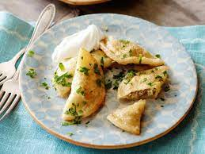

Ingredients
- 4 ½ cups all-purpose flour
- 2 teaspoons salt
- 2 tablespoons butter, melted
- 2 cups sour cream
- 2 eggs
- 1 egg yolk
- 2 tablespoons vegetable oil
- 8 baking potatoes, peeled and cubed
- 1 cup shredded Cheddar cheese
- 2 tablespoons processed cheese sauce
- 1 dash onion salt to taste
- salt and pepper to taste
Directions
- In a large bowl, stir together the flour and salt. In a separate bowl, whisk together the butter, sour cream, eggs, egg yolk and oil. Stir the wet ingredients into the flour until well blended. Cover the bowl with a towel, and let stand for 15 to 20 minutes.
- Place potatoes into a pot, and fill with enough water to cover. Bring to a boil, and cook until tender, about 15 minutes. Drain, and mash with shredded cheese and cheese sauce while still hot. Season with onion salt, salt and pepper. Set aside to cool.
- Separate the perogie dough into two balls. Roll out one piece at a time on a lightly floured surface until it is thin enough to work with, but not too thin so that it tears. Cut into circles using a cookie cutter, perogie cutter, or a glass. Brush a little water around the edges of the circles, and spoon some filling into the center. Fold the circles over into half-circles, and press to seal the edges. Place perogies on a cookie sheet, and freeze. Once frozen, transfer to freezer storage bags or containers.
- To cook perogies: Bring a large pot of lightly salted water to a boil. Drop perogies in one at a time. They are done when they float to the top. Do not boil too long, or they will be soggy! Remove with a slotted spoon.
Tips
- For best results, choose potatoes that have as little water in them as possible such as Russets.
- Choose a rolling pin that is very heavy - it will be easier to roll out the dough.
- The perogies are less likely to burst during cooking if they are frozen when you put them in the boiling water.
Nutrtion Facts
-
Per Serving:
281 calories; protein 8g; carbohydrates 37.6g; fat 11g; cholesterol 50.4mg; sodium 350.5mg. Full Nutrition